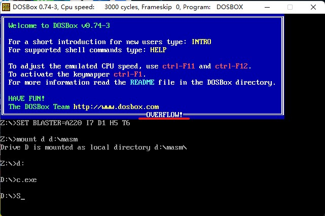
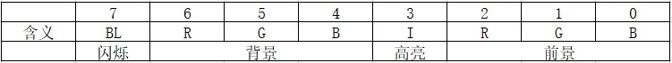

从0开始的汇编语言（十三）
前言
从0开始的汇编语言系列，选用的参考书籍是清华大学出版社，王爽老师的《汇编语言第四版》。该系列属于博主的笔记系列，文中会采用一些书中的例子，图片以及思考题供读者阅读，如需详细学习汇编语言可以购入一本，谢谢。
学习之前我们做如下约定（随着学习深入还会出现新的约定）：
- 十六进制数均以H结尾
- 使用8086CPU作为案例
- 我们使用(地址或寄存器名称)表示一个寄存器或一个内存单元的内容，()内地址是且一定是物理地址
- 我们将idata视作常量
- 我们以reg表示一个寄存器包括ax、ah、sp、bp、si、di等，sreg表示一个段寄存器包括ds、ss、cs、es。
话不多说我们马上开始。
int指令
本篇我们将介绍另一种重要的内中断，由int指令引发的中断。
int指令的格式为：int N，N为中断类型码，它的功能是引发中断过程。当CPU执行一条int指令时就相当于引发一个N号中断的中断过程，执行过程如下：
- 取中断类型码N
- 标志寄存器入栈，IF=0,TF=0
- CS、IP入栈
- (IP)=(N×4)，(CS)=(N×4+2)
从此处转去执行N号中断的中断处理程序。
可以在程序中使用int指令调用任何一个中断的中断处理程序。比如我们修改上一章中的程序，将结束时使用的int指令改为int 0：
1 | assume cs:code |
我们执行这个程序:

我们可以看到在屏幕中间出现了”OVERFLOW!”，程序中本来是没有除法出现的，那么按理来讲就不会触发0号中断处理程序，但现在0号中断处理程序被调用了，这印证了我们之前说到的int指令可以根据类型中断码调用任何一个中断的中断处理程序。
编写供应用程序调用的中断例程
前面我们已经写过0号中断例程了，现在我们讨论如何编写可以供程序调用的中断例程的编写方法，现在有这样一个场景：
功能：将一个全是字母，以0结尾的字符串，转化为大写。
参数：ds:si指向字符串的首地址。
应用举例：将data段中的字符串转化为大写。
首先和我们之前做的一样要先将我们的中断例程安装到内存之中，这样才可以供应用程序调用，代码如下：
1 | assume cs:code |
这里需要注意的是在中断例程capital中使用了寄存器si和cx，编写中断例程和编写子程序是一样的要注意寄存器冲突的问题，这点非常重要。执行完安装程序后，我们就可以使用中断类型码7C来实现字符串转大写的操作啦，具体代码如下：
1 | assume cs:code,ds:data |
对int、iret和栈的深入理解
我们在学习这部分内容前，先思考一个问题：我们怎么才可以用中断例程7cH中断例程完成loop指令的功能。我们先思考loop指令，loop的执行需要两个信息，循环次数和到s的位移，所以，7cH中断例程要完成loop指令的功能，也需要这两个信息作为参数，我们用cx存放循环次数，用bx存放位移。现在我们想要在屏幕中间显示80个“!”,我们先给出完整代码然后分析一下：
1 | assume cs:code |
上面的程序中，用int 7ch调用7ch中断例程进行转移，用bx传递转移的位移。为了模拟loop指令，7ch中断例程应该具有以下两个功能：
- dec cx
- 如果(cx)≠0，转到标号s处执行，否则向下执行。
我们根据这两个功能分析一下7cH中断例程如何实现到目的地址的转移，转到标号s这显然是要使用标号s的地址设置CS和IP，但中断例程怎么才能拿到标号s的段地址和偏移地址呢？还记得吗？当CPU执行int指令后会将CS和IP压入栈中，这里的CS就是当前程序段的段地址，IP是int指令的下一条指令的偏移地址。可见，在中断例程中，可以从栈中取得标号s的段地址和标号se的偏移地址，而用标号se的偏移地址加上bx中存放的转移位移就可以得到标号s的偏移地址。
现在我们知道，可以从栈中直接和间接的获得标号s的段地址和偏移地址，那么我们要怎么用它们设置CS:IP呢？我们可以使用iret指令，我们将栈中的se的偏移地址加上bx中的转移位移，则栈中的se的偏移地址就变成了s的偏移地址。我们再用iret指令，用栈中的内容设置CS、IP，从而实现转移到标号s处。7cH中断例程：
1 | lp: push bp |
因为要访问栈，使用了bp，在程序开始处将bp入栈保存，结束时出栈恢复。当要修改栈中se的偏移地址的时候，栈中的情况为：栈顶处是bp原来的数值，下面是se的偏移地址，再下面是s的段地址，再下面是标志寄存器的值。而此时，bp中为栈顶的偏移地址，所以((ss)*16+(bp)+2)处为se的偏移地址，将它加上bx中的转移位移就变为s的偏移地址，最后用iret出栈返回，CS:IP即从标号s处开始执行指令。如果(cx)=0，则不需要修改栈中se的偏移地址，直接返回即可。CPU从标号se处向下执行指令。
BIOS和DOS所提供的中断例程
在系统板的ROM中存放着一套程序，称为BIOS（基本输入输出系统），BIOS中主要包含一下几部分内容。
- 硬件系统的检测和初始化程序
- 外部中断和内部中断的中断例程
- 用于对硬件设备进行I/O操作的中断例程
- 其他和硬件系统相关的中断例程
操作系统DOS也提供了中断例程，从操作系统的角度来看，DOS的中断例程就是操作系统向程序员提供的编程资源。BIOS和DOS在所提供的中断例程中包含了许多子程序，这些子程序实现了程序员在编程时候经常需要用到的功能。程序员在编程的时候，可以用int指令直接调用BIOS和DOS提供的中断例程，来完成某些工作。和硬件设备相关的DOS中断例程中，一般都调用了BIOS的中断例程。
BIOS和DOS中断例程的安装过程
我们通过之前的学习知道中断例程都需要先安装到内存中才可以使用，但是BIOS和DOS中断例程是怎么安装到内存中的呢？我们来简单的讲述一下这个过程：
- 开机后，CPU一加电，初始化(CS)=0FFFFH，(IP)=0，自动从FFFF:0单元开始执行程序。FFFF:0处有一条转跳指令，CPU执行该指令后，转去执行BIOS中的硬件系统检测和初始化程序。
- 初始化程序将建立BIOS所支持的中断向量，即将BIOS提供的中断例程的入口地址登记在中断向量表中。注意，对于BIOS所提供的中断例程，只需要将入口地址登记在中断向量表中即可，因为它们是固化到ROM中的程序，一直在内存中存在。
- 硬件系统检测和初始化完成后，调用int 19H进行操作系统的引导。从此将计算机交由操作系统控制。
- DOS启动后，除完成其他工作外，还将它所提供的中断例程装入内存并建立相应的中断向量。
BIOS中断例程应用
下面我们举一个例子，来看一下BIOS中断例程的应用。
int 10H中断例程是BIOS提供的中断例程，其中包含了多个和屏幕输出相关的子程序。一般来说，一个供程序员调用的中断例程中往往包含多个子程序，中断例程内部用传递进来的参数来决定执行哪一个子程序。BIOS和DOS提供的中断例程，都用ah来传递内部子程序的编号。
下面看一下int 10H中断例程的设置光标位置功能。
1 | mov ah,2 ;置光标 |
(ah)=2表示调用第10H号中断例程的2号子程序，功能为设置光标位置，可以提供光标所在行号（80×25 字符模式下：0-24）、列号（80×25字符模式下：0-79），和页号作为参数。
(bh)=0，(dh)=5，(dl)=12，设置光标到第0页，第五行，第十二列。
bh中页号的含义：内存地址空间中，B8000H-BFFFFH共32KB的空间，为80*25彩色字符模式的显示缓冲区。一屏的内容在显示缓存区中共占4000个字节。显示缓冲区分为8页，每页4KB，显示器可以显示任意一页的内容。一般情况下，显示第0页的内容。也就是说，通常情况下，B8000H-B8F9FH中的4000个字节的内容将出现在显示器上。
再看一下int 10H中断例程的在光标位置显示字符功能。
1 | mov ah,9 ;在光标位置显示字符 |
(ah)=9表示调用第10h号中断例程的9号子程序，功能为在光标位置显示字符，可以提供要显示的字符、颜色属性、页号、字符重复个数作为参数。
bl中的颜色属性的格式如下：

可以看出，和显存中的属性字节和格式相同。注意，闪烁的效果必须在全屏DOS方式下才能看到。
DOS中断例程应用
int 21H中断例程是DOS提供的中断例程，其中包含了DOS提供给程序员在编程时调用的子程序。我们前面一直使用的是int 21H中断例程的4cH号功能，即程序返回功能，如下：
1 | mov ah,4cH ;程序返回 |
(ah)=4cH表示第21H号中断例程的4cH号子程序，功能为程序返回，可以提供返回值作为参数。我们前面使用这个功能的时候经常写做：
1 | mov ax,4c00H |
我们看一下int 21H中断例程在光标位置显示字符串的功能：
1 | ds:dx 指向字符串 ;要显示的字符串需用"$"作为结束符,但"$"本身不显示,只起到边界的作用 |
(ah)=4cH表示第21H号中断例程的9号子程序，功能为在光标位置显示字符串，可以提供要显示字符串的地址作为参数。
接下来给大家看一个应用中断例程的例子，在屏幕的5行12列显示字符串“Welcome to masm!”具体代码如下：
1 | assume cs:code |
上述程序在屏幕的5行12列显示字符串“Welcome to masm!”，直到遇到’$’(不显示’$’，’$’只起到边界作用)。
 wechat
wechat alipay
alipay